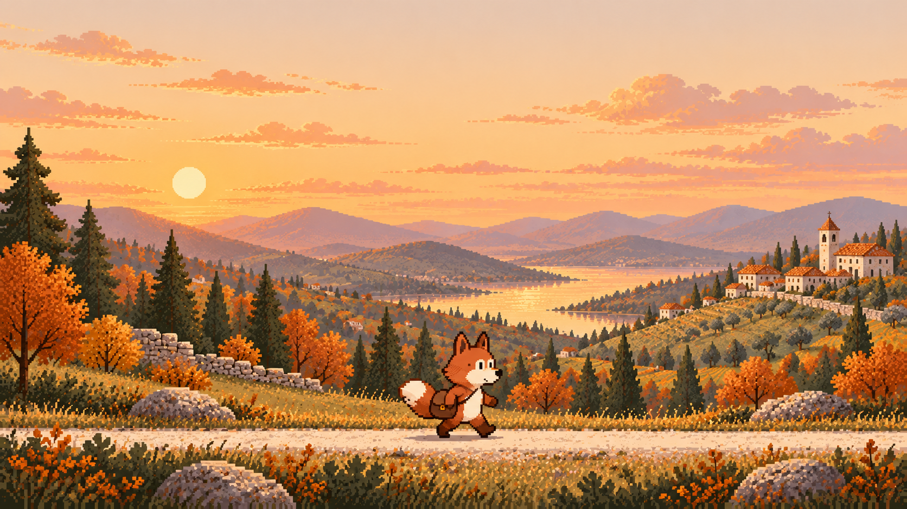

01 · Autumn valley, the master direction
Master fox, warm limestone path, copper foliage and layered valley.
Visual targets and pose/asset references created with ImageGen. The stream implementation is unchanged. Use the original PNGs for detail; the handoff identifies animation and pixel-grid work still needed.